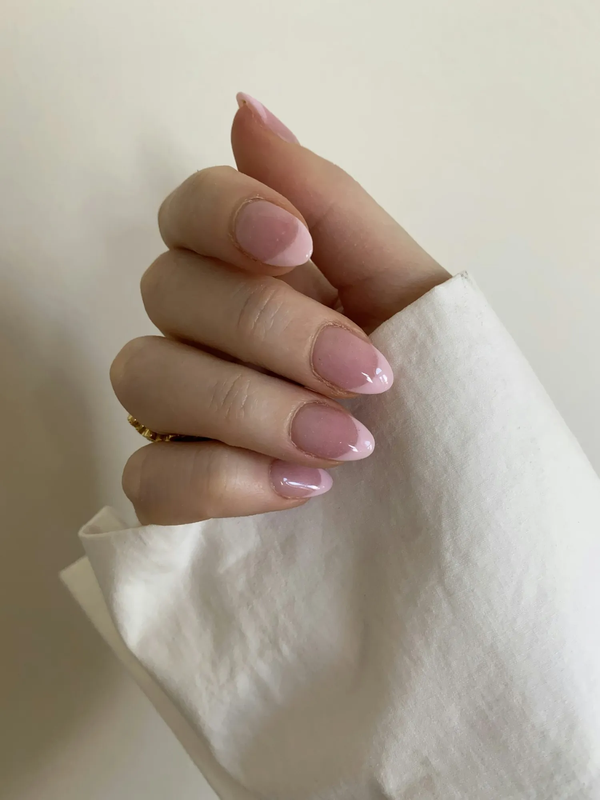
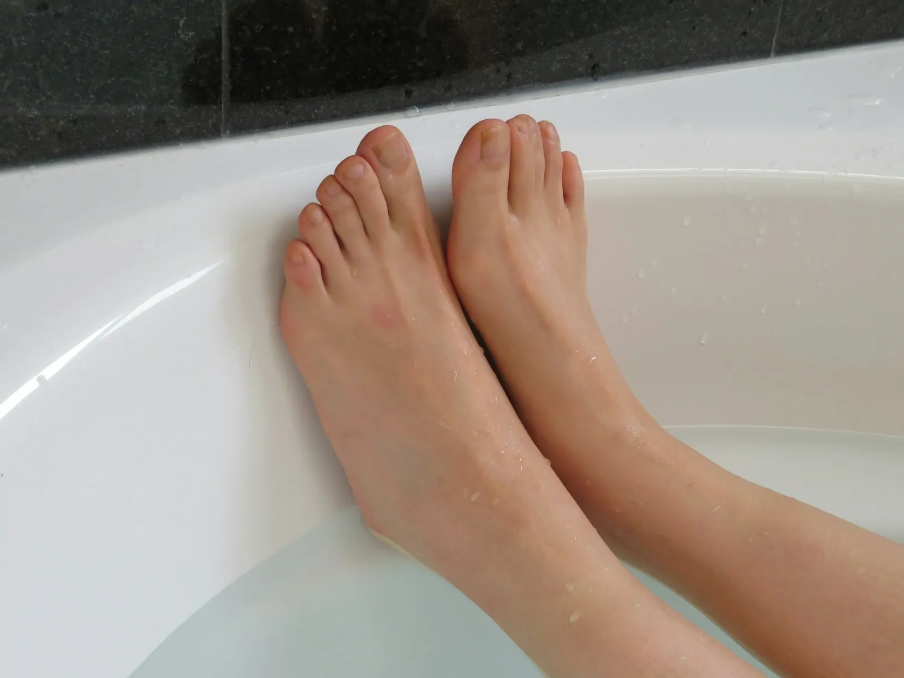
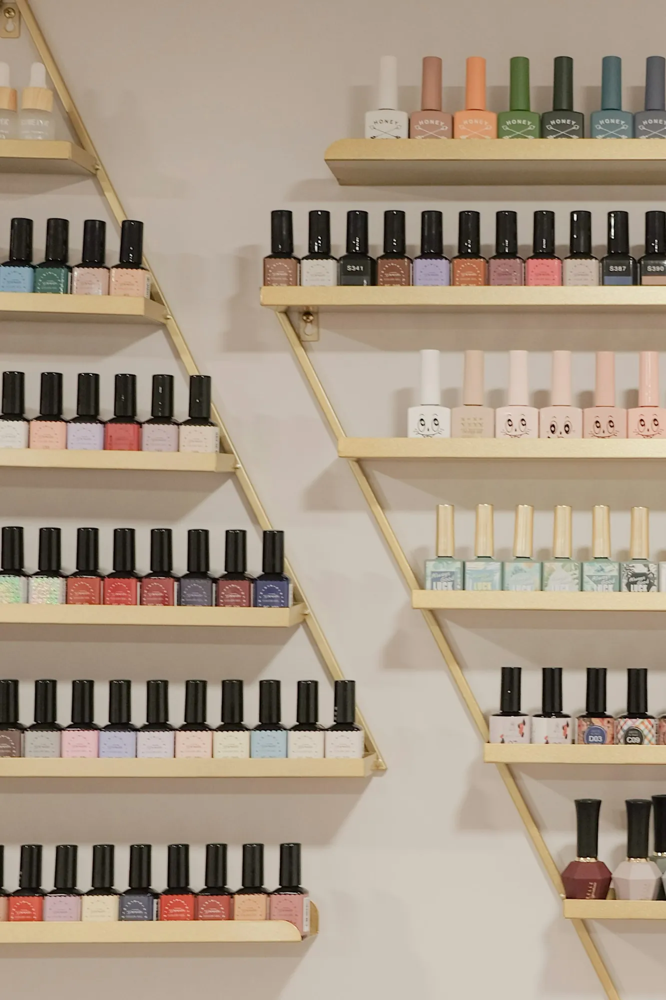
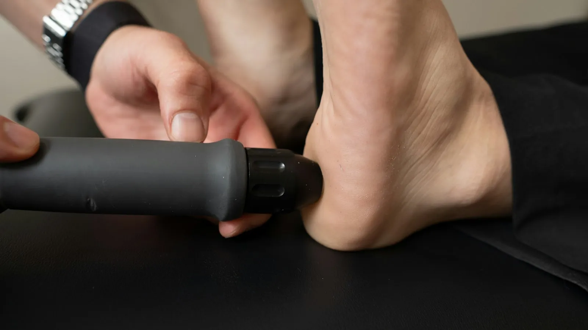
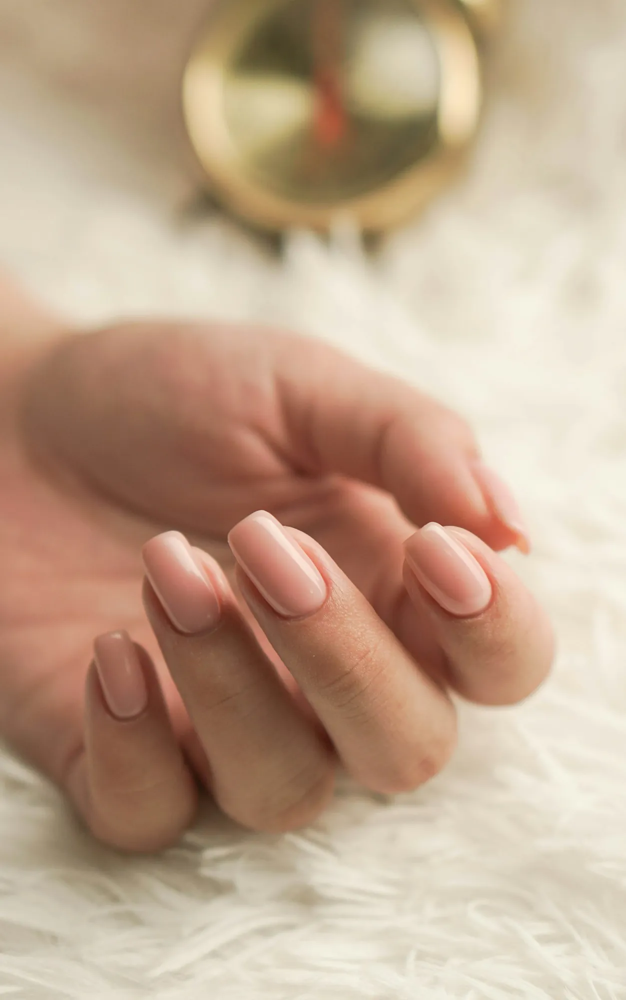
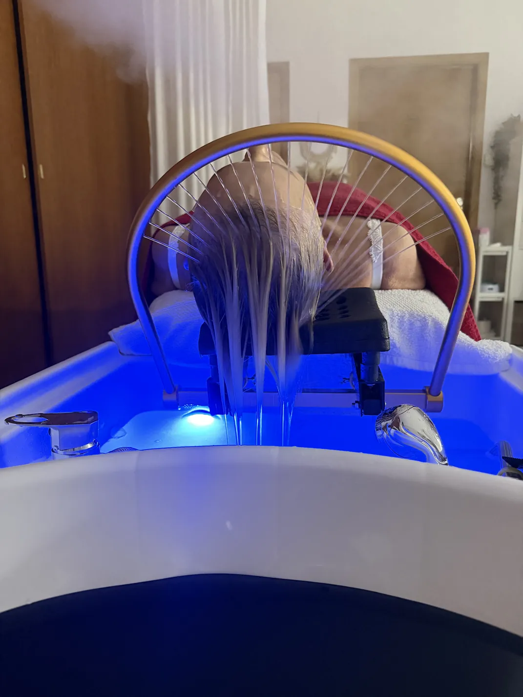
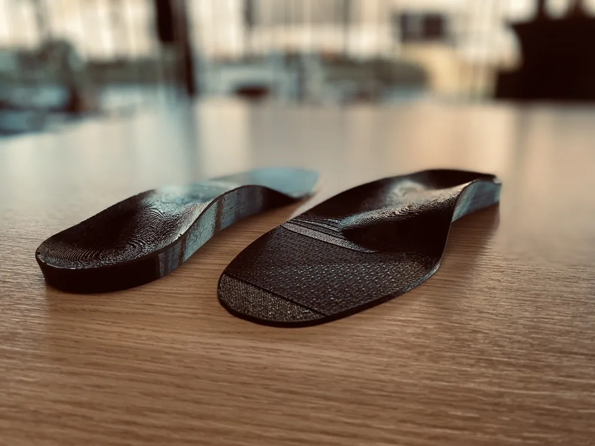

Manicure
Gel, gelish of gewoon netjes verzorgd.
- Gel op eigen nagels
- Gelnagels met verlenging, ook lang
- Gelish
- Baby boom en ombre
- Luxe spa-manicure
- Klassieke manicure, ook voor mannen
- Paraffinebehandeling
- Decoratie en nail art
Van gelnagels en een luxe spa-manicure tot medische pedicure, brows en head spa. Je boekt online wanneer het jou past, ook 's avonds na het werk.



Alles wat je hieronder ziet, boek je rechtstreeks online. Twijfel je welke behandeling je moet kiezen? Bel of stuur even een berichtje, dan zoeken we het samen uit.
Gel, gelish of gewoon netjes verzorgd.

Van verzorgend tot medisch.
Een frisse blik, zonder make-up.
Snel en grondig.
Een ingegroeide nagel, een hardnekkige wrat of een nagel die scheef groeit: daar loop je niet graag mee rond. Bij Lak Cherry kan je ook voor de medische kant van pedicure terecht, rustig en zonder haast.



Weinig mensen weten hoeveel spanning er in je hoofd en nek kan zitten, tot iemand er een uur de tijd voor neemt. De head spa gaat in vijf rustige stappen.

Last van je voeten, knieën of rug na een lange dag rechtstaan? Een goeie steunzool kan veel verschil maken. Je zolen worden op maat gemaakt, afgestemd op jouw voet en het type schoen waarin je ze wil dragen.
Bel voor meer uitlegZo beoordelen 16 klanten Lak Cherry op Google. Lees gerust zelf wat ze over hun nagels en voeten schrijven.
Ik maakte deze demo voor jullie om te tonen wat er kan. Na een kort gesprek maak ik er iets veel persoonlijkers van, helemaal naar jullie wens.
Vrijblijvend. Ik kom langs of we bellen.
Op maat, op jullie eigen domein.
Geen voorschot. Jullie betalen pas als alles klaar is.
Hosting, domeinnaam en kleine wijzigingen, zoals nieuwe openingsuren.
Omdat een voorbeeld meer zegt dan een mail. Zo zien jullie meteen wat er kan, en het kost jullie niets.
Nee. Het gesprek is vrijblijvend. Vinden jullie het niks, dan is het daarmee gedaan.
Na ons gesprek staat jullie site binnen 10 tot 14 dagen online.
Zeker. Jullie domeinnaam kan gewoon blijven, de nieuwe site komt in de plaats van de oude.
Nee, dat doe ik op basis van ons gesprek. Eigen foto's zijn mooi meegenomen, maar niet nodig om te starten.